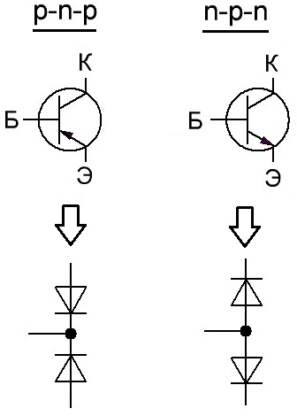
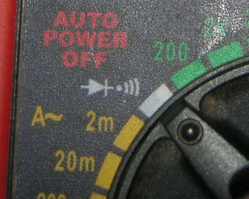
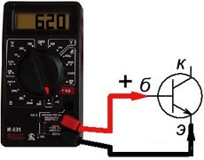
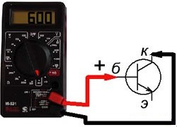
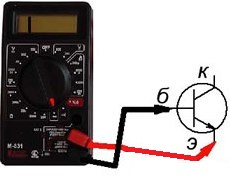
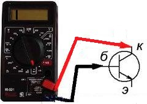
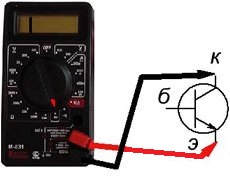
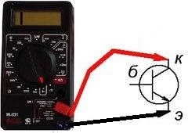

Проверка исправности биполярного транзистора мультиметром
В большинстве случаев о исправности транзистора можно судить по состоянию p-n-переходов. Если рассматривать эти p-n-переходы независимо друг от друга, то транзистор можно представить как совокупность двух диодов.

Рис. 1 - Упрощённая модель биполярного транзистора для проверки исправности
В общем-то взаимное влияние p-n-переходов и делает транзистор транзистором, но при проверке можно с этим взаимным влиянием не считаться, поскольку напряжение к выводам транзистора мы прикладываем попарно (к двум выводам из трёх). Соответственно, проверить эти p-n-переходы можно обычным мультиметром в режиме проверки диодов.
Таблица 1
| 1. Перевести мультиметр в режим проверки диодов. В этом режиме мультиметр будет показывать падение напряжения на p-n переходе в милливольтах. Падение напряжения на p-n переходе для кремниевых элементов должно быть 0,6-0,8 В, а для германиевых – 0,2-0,3 В. |  |
| 2. Включить p-n-переходы транзистора в прямом направлении, для этого на базу транзистора подключим красный (плюс) щуп мультиметра, а на эмиттер черный (минус) щуп мультиметра. При этом на индикаторе должно высветиться значение падения напряжения на переходе база-эмиттер. |  |
| 3. Красный щуп оставить на базе, а черный подключить к коллектору, при этом прибор покажет падение напряжения на переходе. |  |
Примечание: Напряжение на переходе Б-К всегда будет меньше падения напряжения на переходе Б-Э. Это можно объяснить меньшим сопротивлением перехода Б-К по сравнению с переходом Б-Э, что является следствием того, что область проводимости коллектора имеет большую площадь по сравнению с эмиттером. По этому признаку можно определить цоколевку транзистора, при отсутствии справочника. |
|
| 4. Подключить черный щуп на базу транзистора, красный на эмиттер, при этом мультиметр должен показать «1». |  |
| 5. Подключить черный щуп на базу транзистора, красный на коллектор (обратное включение перехода база-коллектор). Мультиметр должен показать «1». |  |
6. Подключить красный щуп мультиметра к эмиттеру, черный - к коллектору (проверка перехода эмиттер-коллектор). Если переходы не пробитые, то тестер должен показать «1». |
 |
| 7. Меняем полярность (красный - коллектор, черный - эмиттер). Результат – «1». |  |
Источники:
joyta.ru - Проверка транзистора мультиметром. Описание методики